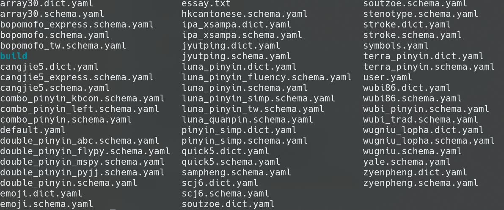
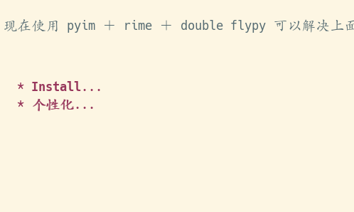

Emacs 使用 pyim ＋ rime ＋ double flypy 打字
之前一直没有使用 Fcitx 输入法作为系统和 Emacs 的输入法，这样造成的困扰有：
- Emacs 本身 Locale 一直无法和系统同步，导致外部输入法无法在 Emacs 中输入中文，每次启动的时候得在 Terminal 中设置 locale 才能在 Emacs 中输入中文
- 打字模式和 Evil Mode 不融洽。一个好的打字环境是：Evil Mode（命令）下自动切换英文，退出 Evil 自动使用双拼
- 词库。之前一直没有同步输入法词库的习惯（和方法）
现在使用 pyim ＋ rime ＋ double flypy 可以解决上面提出的所有问题。
1 Install
1.1 liberime
# linux 系编译相对简单 git clone https://gitlab.com/liberime/liberime.git cd liberime # 提前安装必要的开发工具 cmake librime make liberime # 编译好的文件会保存到 build/ 文件夹下
将 build/ 文件夹下生成的 liberime.so 文件复制到 ~/.emacs.d/pyim/rime/ 中，
(setq load-path (cons (file-truename "~/.emacs.d/pyim/rime/") load-path)) (require 'liberime) # /usr/share/rime-data 为 librime 共享文件夹的目录位置 # 详情可以见 https://github.com/rime/home/wiki/SharedData (liberime-start "/usr/share/rime-data" (file-truename "~/.emacs.d/pyim/rime/")) # 检查安装是否安装成功 # 此命令会返回当前配置的 rime 输入方案 (liberime-get-schema-list)
1.2 pyim
参考 pyim 文档
# 从 melpa 或者下载 repo 手动安装 (require 'pyim) (setq default-input-method "pyim") # 建议使用 posframe 作为输入法候选词弹框 (setq pyim-page-tooltip 'posframe) # 设置 rime 配置方案 (liberime-select-schema "luna_pinyin_simp") # 使用 rime 做后端 (setq pyim-default-scheme 'rime)
2 个性化
2.1 使用双拼或者其他 rime 配置方案
liberime 自带 5 种配置方案，小鹤双拼需要另外添加。Arch 系安装 librime 的时候会将很多常见的配置方案添加到 SharedData 中：

其他系的 Linux 可能需要手动安装配置文件。
创建 ~/.emacs.d/pyim/rime/default.custom.yaml 文件，添加配置：
patch: "menu/page_size": 100 "speller/auto_select": false "speller/auto_select_unique_candidate": false schema_list: - schema: double_pinyin_flypy
将 liberime 的配置设为 小鹤双拼：
(liberime-select-schema "double_pinyin_flypy")
修改 default.custom.yaml 之后需要重启 Emacs 来加载 liberime 的配置文件。
2.2 繁体 -> 简体
在 ~/.emacs.d/pyim/rime/build/ 文件夹中会又许多配置文件，找到 double_pinyin_flypy.schema ,添加：
switches: - name: ascii_mode reset: 0 states: ["中文", "西文"] - name: full_shape states: ["半角", "全角"] - name: simplification reset: 1 states: ["漢字", "汉字"] - name: ascii_punct states: ["。，", "．，"]
2.3 中英文无痛切换
参考 pyim README
(require 'pyim-basedict) (pyim-basedict-enable) ;; Auto switch input me;; 设置 pyim 探针设置，这是 pyim 高级功能设置，可以实现 *无痛* 中英文切换 :-) ;; 我自己使用的中英文动态切换规则是： ;; 1. 光标只有在注释里面时，才可以输入中文。 ;; 2. 光标前是汉字字符时，才能输入中文。 ;; 3. 使用 M-j 快捷键，强制将光标前的拼音字符串转换为中文。 (setq-default pyim-english-input-switch-functions '(pyim-probe-dynamic-english pyim-probe-isearch-mode pyim-probe-program-mode pyim-probe-org-structure-template)) (pyim-isearch-mode 1) (global-set-key (kbd "M-j") 'pyim-convert-string-at-point)
3 使用
